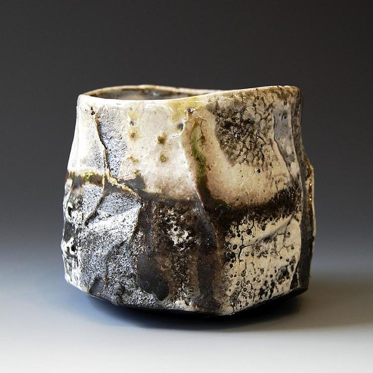

Meet Akira Satake, Japanese ceramic artist in Asheville, NC!
Here is a teapot made by him using a handbuilding technique
This is a Japanese tea ceremony bowl known as a chawan. Used in many celebratory tea ceremonies
| Piece | Price |
|---|---|
| Teapot | $2,000,000 |
| Chawan | $1,000,000 |